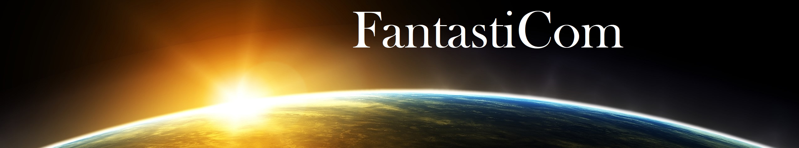
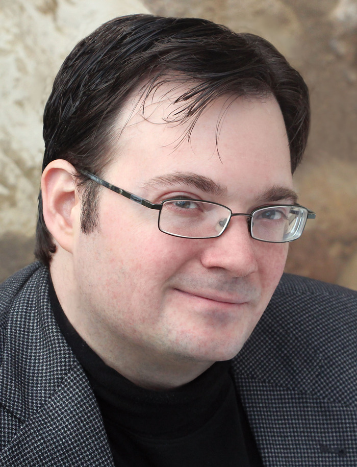

Brendon Sanderson
Brandon Sanderson (Linkoln, 19. decembar 1975) američki je pisac fantastike i naučne fikcije. Najpoznatiji je po svom serijalu Mistborn i radu na završetku serijala epske fantastike Roberta Džordana po imenu Точак времена. Sanderson je 2010. godine objavio The Way of Kings, prvu od deset knjiga serijala The Stormlight Archive. Drugi nastavak, Words of Radiance, objavljen je marta 2014. godine.
Sanderson je radio kao urednik časopisa Leading Edge dok je pohađao Univerzitet Brigam Jang, na kojem sada godišnje drži kurs kreativnog pisanja. Napravio je 2008. godine podkast sa autorom Denom Velsom i karikaturistom Hauardom Tejlerom, koji su nazvali Writing Excuses i koji sadrži teme o kreiranju i proizvodnji veb-stripova.
Nakon smrti Roberta Džordana u septembru 2007. godine, Sanderson je izabran od strane Robertove udovice i urednice Harijet Makdugal, da završi poslednje knjige serijala epske fantastike Točak vremena (engl. The Wheel of Time). Makdugalova ga je zamolila da završi serijal nakon što je bila duboko impresionirna njegovim prvim romanom Mistborn. Tor Books je 7. decembra 2007. najavio, nakon razmatranja, šta je potrebno da završi serijal. Sanderson i Tor Books saopštavaju u martu 2009. da će umesto jedne knjige ovog serijala biti objavljene tri. Prva od njih, The Gathering Storm, objavljena je 27. oktobra 2009. godine i postala je broj jedan na listi bestselera u žanru naučne fantastike Njujork tajmsa.
Sanderson 2010. godine objavljuje prvi roman pod nazivom The Way of Kings, u serijalu za koji je planirano deset knjiga pod nazivom The Stormlight Archive. Dospeo je na 7. mesto na listi bestselera Njujork tajmsa. Towers of Midnight, pretposlednja knjiga serijala The Wheel of Time, objavljena je tek nešto više od godinu dana nakon dela The Gathering Storm (2. novembra 2010. godine) i takođe je zauzela broj 1 na bestseler listi. Četvrta knjiga za Alcatraz, Alcatraz Versus the Shattered Lens, objavljena je mesec dana kasnije (1. decembra 2010. godine).
Prevedena dela možete naći na ovom mestu.
Patrik Rotfus
Patrik Rotfus je rođen 1973. godine u Medisonu u Viskonsinu. Postao je strastveni ljubitelj knjiga delimično zbog loše klime, a i zato što nije bilo kablovske televizije. Nameravao je da postane hemičar, ali se predomislio i prebacio na studije psihologije, pa odustao i od toga i pohađao sva predavanja koja su ga zanimala. Za vreme studija napisao je dugačak roman epske fantastike Pesma plamena i grmljavine, koji je bezuspešno pokušavao da objavi.
Tek pošto je sa kratkom pričom Put za Levinšir, zapravo odlomkom iz romana, pobedio na konkursu književne radionice Pisci budućnosti, uspeo je da nađe agenta a potom i izdavačku kuću. Roman je podeljen na tri dela a naziv mu je promenjen u Hronika o kraljoubici, da se ne bi dovodio u vezu sa serijalom Pesma leda i vatre Džordža R. R. Martina. Ime vetra, prvi deo Hronike, objavljen je 2007. godine, a ubrzo je dospeo i na bestseler listu Njujork tajmsa,i osvojio prestižnu nagradu Kvil za najbolji roman epske fantastike. Patrik Rotfus živi u Viskonsinu sa devojkom Sarom i sinom Utom.
Robert Džordan
Robert Džordan (1948-2007) ili Džejms Oliver Rigni kako mu je zapravo pravo ime, rođen je u Čarstonu u Južnoj Karolini.
Naklonost prema književnosti razvio je već u četvrtoj godini života, kada je uz slučajnu pomoć svog dvanaestogodišnjeg brata naučio da čita. Sa pet godina već se nosio sa Markom Tvenom i Žilom Vernom.
Diplomirao je na Vojnom fakultetu Južne Karoline, na odseku za fiziku. Po završetku studija radio je kao nuklearni inženjer za vojsku SAD-a. Dva puta je služio vojsku u Vijetnamu 1968. i 1970. godine za šta je odlikovan sa tri ordena.
Počeo je da piše 1977. godine i tokom dugogodišnje karijere koristio je više pseudonima. Najpoznatiji alijasi su mu Džekson O'Rajli i Rejgan O'Nil.
Uživao je u lovu, pecanju, pokeru, šahu, jedrenju i sakupljanju lula. Sa suprugom Harijet MekDugal živeo je u kući koja je sagrađena 1797. godine.
Pored serijala Točak vremena, napisao je i niz romana posvećenih kultnom junaku Konanu.
Svetsku slavu stekao zahvaljujući serijalu Točak vremena koji je samo u Severnoj Americi prodat u preko 14 miliona kopija.
Godine 2006. utvrđeno mu je retko oboljenje krvi. Preminuo je u 16. septembra 2007. u 2.45 popodne.
Prevedena dela možete naći na ovom mestu.
Rodžer Želazni
Rodžer Zelazni je rođen u Klivlendu, Ohajo. Kao profesionalan pisac počeo je raditi 1969. godine. Jedan je od začetnika američkog novog talasa naučke fantastike. Počeo je objavljivati priče u časopisu „Amejzing Storiz“ (engl. Amazing Stories) 1962, iste godine kada je magistrirao engleski jezik na Kolumbija univerzitetu. Tokom narednih pet godina razvio se u zapaženog pisca, objavljujući ponekad i pod pseudonimom Harison Denmark.
Već 1965. dobio je nagradu „Nebula“. Sledi prva nagrada Hugo 1966. godine za roman „Ovaj besmrtnik“, te ponovno nagrada Hugo 1968. za roman „Gospodar Svetlosti“ (objavljen prvi put 1967. godine), po mnogima njegovo najbolje delo. Godine 1969. izlazi roman „Aleja prokletstva“, po kojm je 1977. i snimljen istoimeni film. Tokom 70-ih sve se više okreće pisanju fantastike (Amberske hronike), premda nikada ne napušta naučnu fantastiku te za kraće novele i priče dobija nagrade Hugo i Nebula 1976. zatim Hugo 1982, 1986. i 1987. Umro je 1995. godine u 58. godini života.
Prevedena dela možete naći na ovom mestu.
Andžej Sapkovski
Andžej Sapkovski (negde Andržej Sapkovski) rođen je 21. jula 1948 u Lođu u Poljskoj. Poznat je pisac epske fantastike, ne samo u Poljskoj, gde ima status nacionalnog heroja, već i širom sveta. Najpoznatije njegovo delo je serijal Saga o Vešcu.
Svoju literarnu karijeru je započeo kao prevodilac, prevodeći naučnu fantastiku. Prvu kratku priču „Veštac“ (polj. Wiedźmin) iz hira, da bi mogao da učestvuje u takmičenju Poljskog magazina epske i naučne fantastike „Fantastika". Budući da je bio ekspert u marketingu, kako kaže „znao je kako da proda“, osvojio je treću nagradu. Priča je bila objavljena u časopisu „Fantastika" 1986. i bila je neverovatno uspešna, kako kod čitalaca tako i kod kritičara. Sapkovski je kreirao i ciklus priča, zasnovan na svetu „Vešca", spajajući tri kolekcije kratkih priča i pet novela. Ova saga i mnoga ostala njegova dela, napravile su od njega najpoznatijeg pisca fantastike 1990.-ih u Poljskoj.
Pored toga izdao je i esej o „svetu Vitezova okruglog stola kralja Artura. Maladie“, „leksikon ljubitelja fantazije pronađen u Zmajevoj pećini“ (polj. Rękopis znaleziony w Smoczej Jaskini), vodič za igranje RPG igre Oko Irhedesa (polj. Oko Yrrhedesa), roman „Zmija“ (polj. Żmija), kao i mnoštvo pripovedaka i članaka u časopisima i zbornice kratkih priča. Andžej Sapkovski je osvojio brojne književne nagrade, poljske i strane, uključujući Pasport politike. Nagradu Januš O Zajdel je osvojio pet puta (drugi, posle Jaceka Dukaja, najnagrađivaniji autor u istoriji nagrade) za priče Manje zlo (1990) (polj. Mniejsze zło), Mač sudbine (1992) (polj. Miecz przeznaczenia), Koš posle bombe (1993) (polj. W leju po bombie) i roman Krv Vilenjaka (1994) (polj. Krew elfów) i Narenturm (2002) (polj. Narrenturm). Osvojio je i dve nagrade Evropskog društva naučne fantastike, 1996. za najboljeg pisca i počasnu nagradu Evropski veliki majstor 2010.U junu 2009, bio je nagrađen David Gemel nagradom za fantaziju za roman „Krv Vilenjaka“ – Engleskog izdanja prvog toma sage o Vešcu, a osvojio je i špansku Ignotus- nagradu za najbolju antologiju i najbolju kratku priču stranog autora iz žanra naučne i epske fantastike.
Prevedena dela možete naći na ovom mestu.
Stiven Donaldson
Stiven Donaldson (engl. Stephen R. Donaldson; Klivlend, 13. maj 1947) je američki pisac fantazije, naučne fantastike i misterije, najpoznatiji po serijalu o Tomasu Kovenantu. Njegov rad privukao je pažnju kritike zahvaljujući maštovitosti radnje, živopisnim likovima i brzim obrtima radnje. Diplomirao je na koledžu Vuster (The College of Wooster) i magistrirao na univerzitetu Kent Stejt (Kent State University). Trenutno živi u Novom Meksiku. Donaldson pripada generaciji autora fantastike koji su se istakli 70-ih i početkom 80-ih.
Donaldsovi najpoznatiji serijali su Hronike Tomasa Kovenanta, Nevernika, koji u prvi plan postavlja Tomasa Kovenanta, ciničnog gubavca, odbačenog od društva, predodređenog da postane spasitelj alternativne Zemlje. Kovenant se bori protiv tiranina, Poglavara kletnika, koji namerava da razbije svod vremena kako bi pobegao iz ropstva i osvetio se svom zakletom neprijatelju, Tvorcu.
Hronike su prvobitno objavljene kao dve trilogije između 1977. i 1983. Prema rečima sadašnjeg izdavača te dve serije prodate su u više od 10 miliona primeraka. Treća serija, Poslednje hronike Tomasa Kovenanta, počele su da se objavljuju 2004.
Prevedena dela možete naći na ovom mestu.
Stiven Erikson
Stiven Erikson je jedan od najznačajnijih stvaralaca epske fantastike ne samo današnjice, već i u istoriji žanra. Svojim desetotomnim serijalom „Malaška knjiga Palih“ (od kojih je Laguna objavila prvih pet nastavaka, a šesti se prevodi) Erikson spaja dva veka epske fantastike, ali i dva pristupa žanru. Moglo bi se reći da je Erikson dugo vremena bio poslednji pisac velikih fantazijskih epova i prvi pisac tada još nedefinisanog grimdarka. Istovremeno se čitajući kao angažovana kritika savremenog društva i ljudske civilizacije, kao veličanstveni ep i kao strmoglava pustolovina, Eriksonov magnum opus s punim pravom ga je svrstao među pet najboljih i najpopularnijih savremenih stvaralaca epske fantastike.
Prevedena dela možete naći na ovom mestu.
Piter V Bret
Pošto je odrastao redovno se hraneći romanima epske fantastike, stripovima i Dungeons & Dragons igrama, Piter V. Bret (za prijatelje Pit) piše epskofantastične priče otkako pamti. Diplomirao je englesku književnost i istoriju umetnosti na univerzitetu Bafalo 1995. godine, a onda proveo više od jedne decenije u farmaceutskom izdavaštvu pre nego što se vratio svojoj ljubavi.
"Odrastao sam na delima Terija Bruksa, Pirsa Entonija, Tolkina, Kinga, Trejsi Hikman... Skupljao sam i stripove, trenutna kolekcija sadrži preko deset hiljada naslova. Kasnije sam počeo da čitam Roberta Džordana, Fridmana, Dejvida Edingsa i Rejmonda Fajsta. Svi su oni uticali na mene, ali ako bih morao da navedem jednog autora, onda je to Džordž R. R. Martin. „Igra prestola“ je u potpunosti promenila moj pogled na to šta su romani, konkrento romani epske fantastike, u stanju da postignu."
"Oduvek sam bio Marvelov fan, mada sam čitao i sakupljao i DC stripove, kao i brojne stripove manjih i nezavisnih izdavača. Najviše sam voleo „Spajdermena“ i „X-men“, mada i „Kapetan Amerika“ je tu sa njima. Filmovi o Kapetanu Americi su po mom mišljenju ono najbolje što Marvel ima da ponudi. Što se tiče modernih stripova, predlažem „Invncible“, „Fables“, „Astro City“, „Powers“ i „Criminal“. Takođe, manga klasik „Lone Wolf & Cub“ je imao veliki uticaj na mene, što se može videti i u „Prestolu od lobanja“, kada jedan od likova bude nateran da ide u borbu, noseći svoje dete."
Prevedena dela možete naći na ovom mestu.
Robin Hob
Rođena u Kaliforniji 1952. godine. Robin Hob je pseudonim Margaret Astrid Lindholm Ogden.
Ova spisateljica uporedo koristi i alijas Megan Lindholm sa kojim je i započela svoju karijeru. Pod ovim pseudonimom je pisala od 1983. do 1992. godine. Od 1995. godine kontinuirano se koristi imenom Robin Hob.
Trenutno piše pod oba pseudonima i živi u gradu Takoma, u državi Vašington. Veoma je cenjena među fanovima epske fantastike.
Prevedena dela možete naći na ovom mestu.
Dejvid Gemel
Dejvid Gemel (engl. David Gemmell ; 01. avgust 1948 - 28. juli 2006) bio je popularni britanski pisac herojske fantastike. Objavio je svoje prvo književno delo Legenda 1984. godine po kome je i najpoznatiji.
Rođen je u zapadnom Londonu. Odrastao je bez oca u gradskom području trpeći maltretiranja i izazove svojih vršnjaka. Često usamljen, živeo je u svetu mašte i za sebe izmišljao priče zasnovane na onima koje bi pročitao. Sa šesnaest godina je izbačen iz škole. Nastavio je da radi kao radnik, vozač kamiona. Posle intervjua za posao u lokalnim novinama, postaje uspešan novinar i urednik novina The London Daily Mail, Daily Mirror i Daily Express.
Posle prvog romana Legenda 1984, Gemel se potpuno posvetio pisanju. Gemelova dela su često puna nasilja i bave se temama časti, ali i odanosti i iskupljenja. Njegova dela su publikovana u tematskim edicijama i u vidu ilustrovanih romana. Celokupno delo Dejvida Gemela razvrstano je na nekoliko ciklusa. Najpoznatiji su romani iz Drenajske sage (devet romana), Serijal o Kamenovima moći, Rigante serijal itd. Gemel slika složene likove sa istančanim osećajem za humor uz neophodnu dozu realnosti. Čitanje njegovih dela je više od zabave - ono nadahnjuje. Složene i povremeno zamorne ratne strategije čine pripovedanje ubedljivim i čitaoca brzo i lako vode kroz priču. Tokom dvadeset dve godine spisateljskog rada, usavršavao je veštinu pisanja, stil mu se popravio, a likovi postali složeniji i protivurečniji. Više puta se vraćao temi opsade, ali tek u poslednjoj trilogiji bacio se na najveću opsadnu priču na svetu, priču o Troji. Nije doživeo da završi poslednju knjigu.
Prevedena dela možete naći na ovom mestu.
Stiven King
Stiven Edvin King (engl. Stephen Edwin King, rođen 21. septembra 1947) je američki pisac, scenarista, muzičar, kolumnista, glumac, filmski producent i režiser. King je do sada prodao preko 350 miliona primeraka svojih knjiga, a najpoznatiji je po svom radu u oblasti horor fantastike u kojima demonstrira izvrsno poznavanje istorije ovog žanra. Mnoge njegove priče adaptirane su u druge medije, kao što su filmovi, TV serije i stripovi. King je napisao i nekoliko knjiga pod pseudonimom Ričard Bakman (Richard Bachman), kao jednu kratku priču gde je potpisan kao John Swithen.
Mračna kula je serijal romana napisanih od strane američkog autora Stivena Kinga, koji inkorporira teme iz više žanrova, uključujući fantastiku, nauču fantastiku, horor i vestern. Opisuje “revolveraša“ i njegov pohod ka tornju, čija je priroda i fizička i metaforička. King je deklarisao ovaj serijal svojim magnum opus-om. Uz osam integralnih novela ovog serijala koji u zbiru imaju 4250 strana, mnoga Kingova druga dela ostvaruju vezu sa ovom pričom, uključujući koncepte i likove koji ulaze u igru kako se serijal približava kraju. Serija prednastavaka u vidu grafičkih novela je usledila posle završetka serijala.
Serijal je najvećim delom inspirisan pesmom „Čajld Roland je do Mračne kule došao“ Roberta Brauninga, čiji je kompletan tekst uključen u apendiks poslednje novele u serijalu. U predgovoru revidovanog izdanja “Revolveraša” iz 2003. King takođe navodi i Gospodara prstenova, „Legendu o kralju Arturu“, i Dobar, loš, zao kao inspiracije. Tvrdi da je Klint Istvudov lik u „Čoveku bez imena“ jedna od najvećih inspiracija za protagonistu, Rolanda Diskejna. Kingov stil imenovanja lokacija u serijalu, kao što je Sred-svet, i kreiranje jedinstvenog jezika (Visoki govor), su takođe nastali pod uticajem dela Dž. R. R. Tolkina.
Iako je serijal proglašen završenim izdavanjem sedmog toma 2004. King je u intervjuu u martu 2009. opisao ideju za novu kratku priču: “I onda sam pomislio, 'Pa, zašto ne bih našao još tri ovakve i načinio knjigu koja bi bila skoro kao zbirka modernih bajki?' Onda je ova stvar počela da raste komad po komad, tako da izleda da će biti novela.” Prema Kingu, ideja je novi roman “Mračne kule”.
King je rekao, u vezi sa serijalom Mračna kula: „Još nije zapravo gotov. Tih sedam knjiga su samo odlomci jedne ubernovele." Stiven King je potvrdio ovo tokom svog intervjua u okviru TimesTalk događaja u Tajms centru u Njujorku 10. novembra 2009. i sledećeg dana Kingov oficijalni sajt je objavio da će King početi da radi na toj noveli za oko osam meseci, i da je preliminarni naslov ”Vetar kroz ključaonicu“. King je naglasio da će ova novela biti smeštena između treće i četvrte knjige u serijalu. Roman, pod naslovom “Mračna kula: Vetar kroz ključaonicu”, je najavljen na Stiven Kingovom oficijalnom sajtu 10. marta 2011. i izdat je 24. aprila 2012.
Prevedena dela možete naći na ovom mestu.
Tad Vilijems
Robert Pol Tad Vilijems, pisac epske (a pomalo i naučne) fantastike rođen je 1957.
Bavio se, kako sam priznaje, sa više stvari u životu nego što bi to ijedna normalna osoba priznala. Pevao je u bendu, prodavao obuću, bio rukovodilac u jednoj finansijskoj instituciji, raznosio novine, dizajnirao vojne priručnike – da pomenemo samo neke.
Suosnivač je interaktivne televizijske kompanije i uporedo s knjigama piše i stripove i televizijske i filmske scenarije.
Tad živi sa suprugom u Londonu i Los Anđelesu.
Prevedena dela možete naći na ovom mestu.